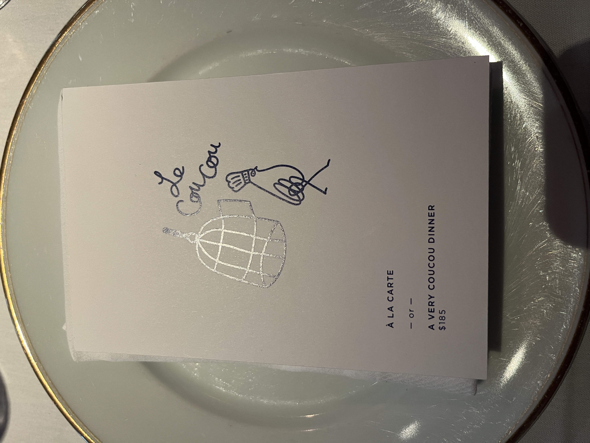
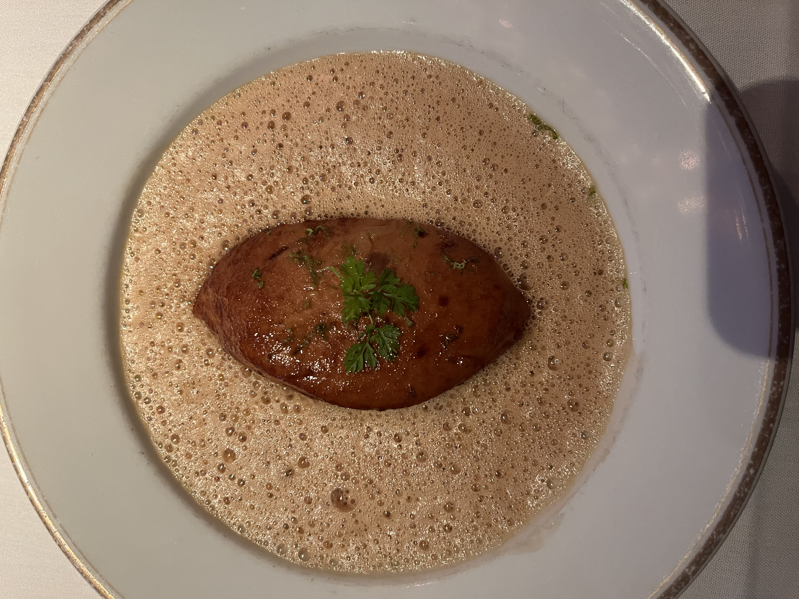
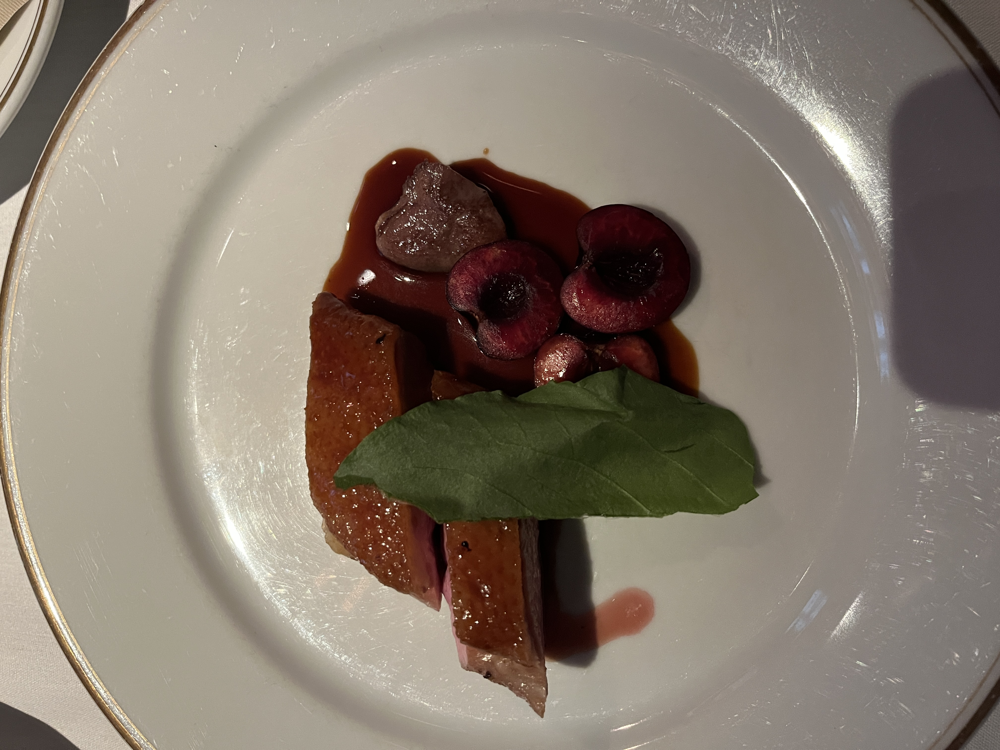
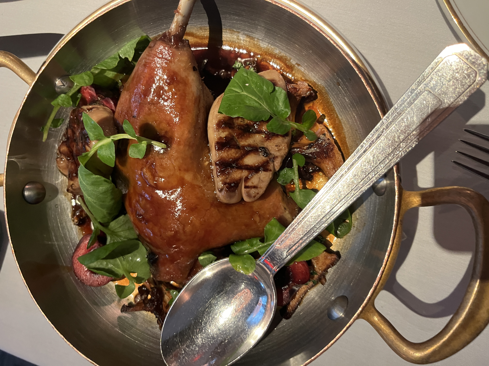

Le CouCou
SoHo, New York City
Introduction
I really knew nothing about this place before going in. I had nothing to do with picking it, but I really, really enjoyed it! Generally French cuisine seems like an absurd overload of butter in an attempt to approach umami, but this was really unique and memorable. I had no issues with my gluten allergy here, and the waiter was very helpful in steering us away from a fixed menu experience. Although they can adapt the fixed menu to be gluten-free, he said the experience was severely compromised and it’s better to go a la carte.
Overall the pictures are really bad quality for this post because I sat right under a light. But it’s ok.

Food
We started with the yellowfin tuna appetizer, which was actually sweet because of the raisins! I loved it though I forgot to take a picture. We then moved on to the pike dumpling with lobster sauce. To be honest, I was excited to eat a gluten-free dumpling, but this dumpling was nothing like what I expected. It was very soft (probably did not have an actual dough shell) and very large. The seafood flavor was really overwhelming (not surprising, I know), but the lobster sauce really calmed things down as a nice base.

The main entree was a real hit. Loyal followers will remember that I was disappointed by the duck in Hutong. But the duck in Le Coucou (the dish it is well-known for) is fantastic. It came in two parts: the breast was already evenly divided between the two of us and accompanied by foie gras and cherries. But the rest of the duck was still on the bone1 and was delivered in a pan for us to share. The duck had a great tart flavor from the cherries that cut through the fattiness, and the foie gras was such a nice treat to enjoy in between. I initially thought that all together, the dish would be far too rich, but it ended up being very balanced and delicious!


We got two desserts. One was a pavlova: meringue with fruit and mint. It was a really nice way to clear the palate after such a rich main dish. The other was on the house: an assortments of chocolates and sweets, all of which were gluten-free!
Conclusion
I would definitely come back here. I would probably get the same dishes though – I don’t think the menu was overflowing with gluten-free options. I don’t mind a restricted meal that’s this good!
-
I let my dinner companion deal with this but it actually was not hard to get the meat off the bone since it was cooked so well! ↩